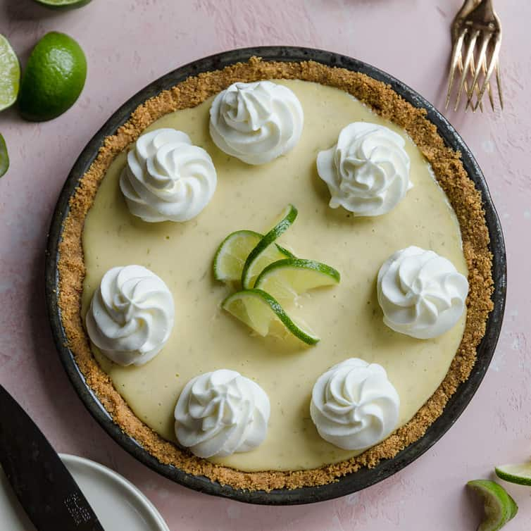

Learn Baking... in just few steps
Learn Baking... in just few steps|  Key Lime Pie |
Ingredients |
|
| 1 recipe pastry for a 9 inch double crust pie | 1/2 cup unsalted butter |
| 3 tablespoons all-purpose flour | 1/4 cup water |
| 1/2 cup white sugar | 1/2 cup packed brown sugar |
| 8 Granny Smith apples - peeled, cored and sliced |
Ingredients |
|
| 1 (15 ounce) can pumpkin | 1 (14 ounce) Sweetened Condensed Milk |
| 2 large eggs | 1 teaspoon ground cinnamon |
| 1/2 teaspoon ground ginger | 1/2 teaspoon ground nutmeg |
| 1/2 teaspoon salt | 1 (9 inch) unbaked pie crust |
Ingredients |
|
| 1 (9 inch) prepared graham cracker crust | 3 cups sweetened condensed milk |
| 1/2 cup sour cream | 3/4 cup key lime juice |
| 1 tablespoon grated lime zest |